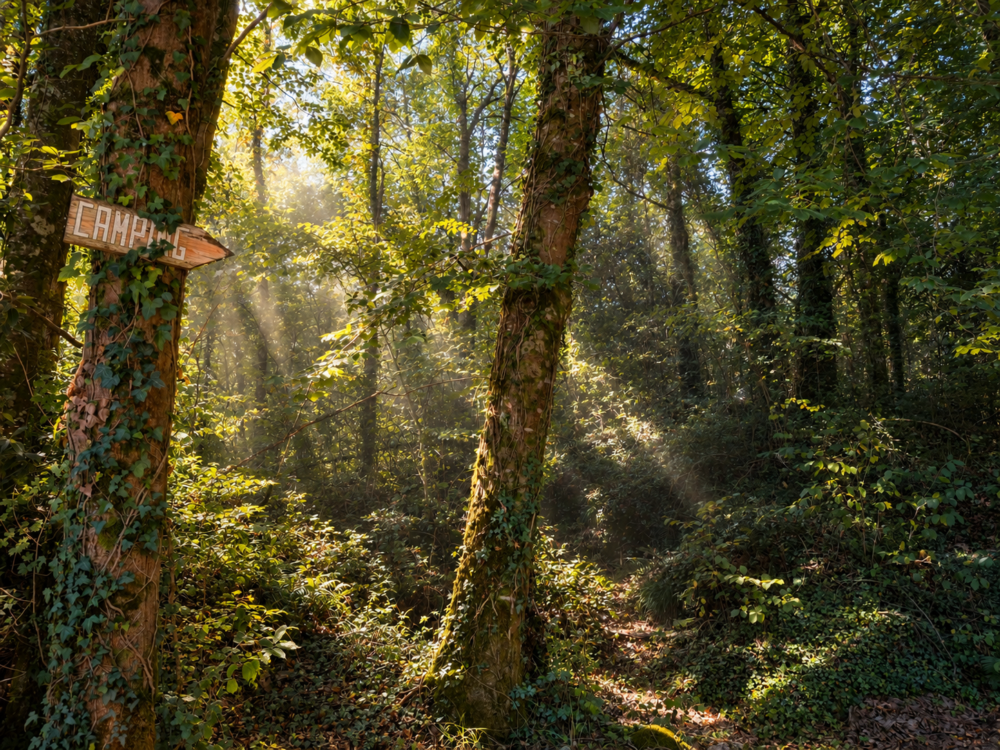
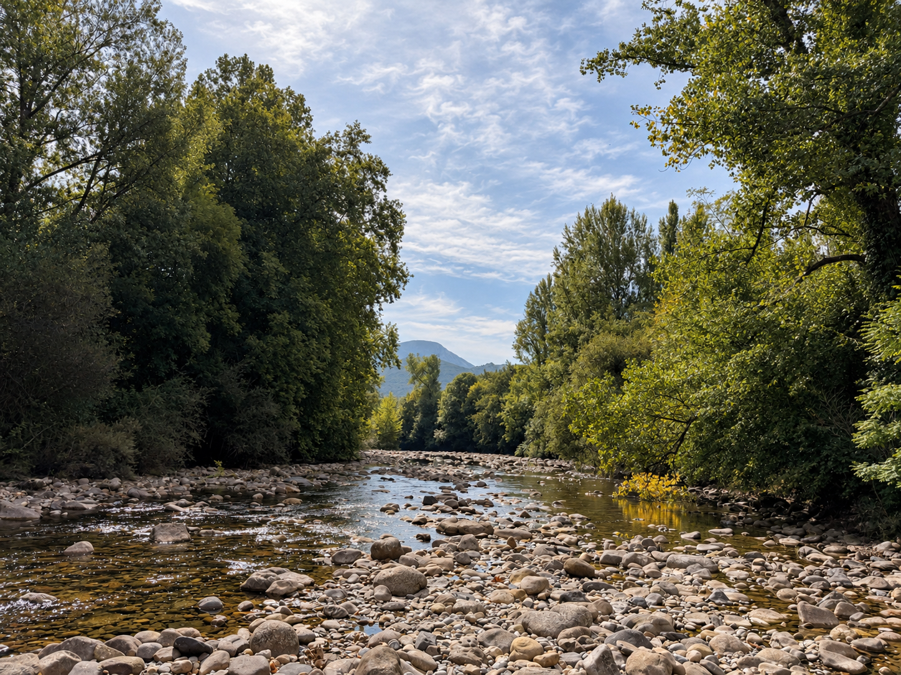
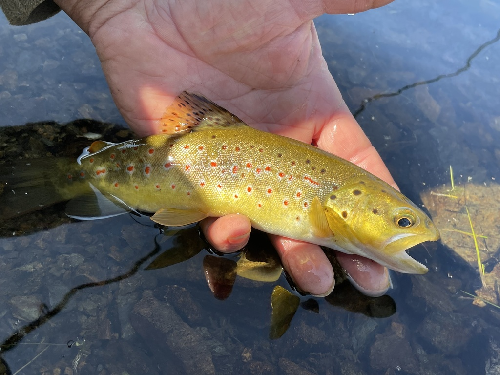
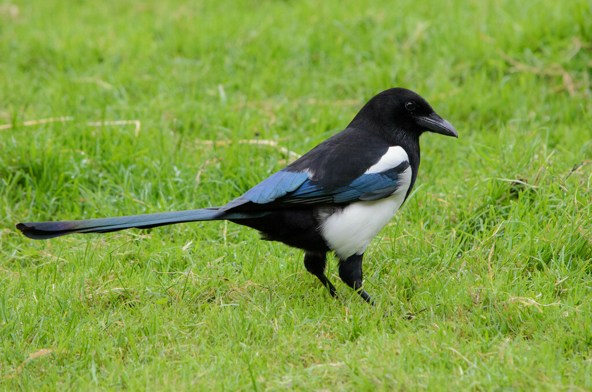
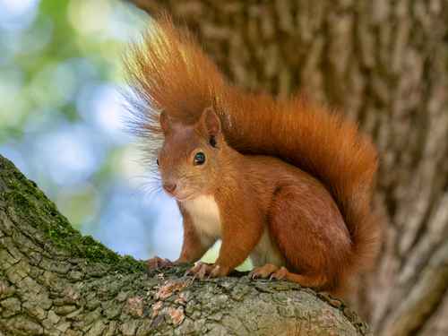
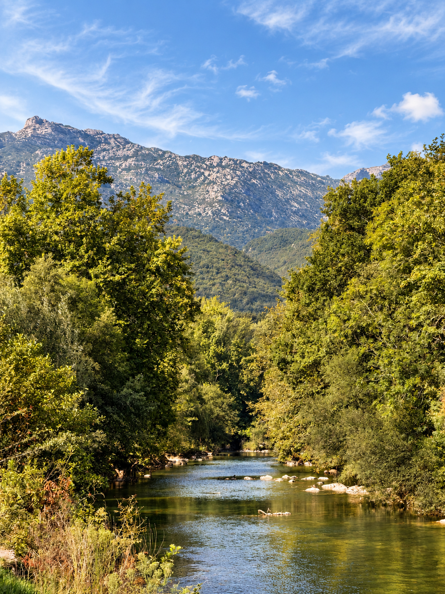

PUNTOS DEL RECORRIDO
Lugares que descubrirás durante la ruta
EL RECORRIDO
Empezando la ruta en el Ayuntamiento, llegando a la Plaza Duques de la Victoria, por detrás de la iglesia cogemos la calle Manuel Marure que nos llevará a Entrepuentes, zona donde se unen el río Asón y su principal afluente, el río Gándara. Aquí encontraremos un antiguo puente medieval, un molino (ahora propiedad privada) y la presa Don Cecilio.
Siguiendo la carretera atravesaremos una zona ajardinada y área recreativa que nos lleva al Bº Vegacorredor. Una vez aquí subimos por la carretera de la izquierda en dirección al Bº Helguero, el cual atravesaremos y donde podremos visitar la Fuente Iseña, manantial que abastece Ramales.
Siguiendo el camino regresaremos hasta el Humilladero Ánima de Iseña y desde aquí, volveremos por el mismo recorrido hasta la plaza.
TRES HÁBITATS,
UN PASEO
En pocos kilómetros, el Paseo de Vegacorredor reúne bosque de ribera, bosque mixto con centenarios castaños y el espectacular encinar cantábrico de la Sierra del Hornijo.
TRES HÁBITATS EN POCOS KILÓMETROS
El paseo comienza junto a la orilla del río Asón, donde disfrutaremos de un frondoso bosque de ribera. Crecen alisos, sauces, fresnos, plátanos, olmos y avellanos, acompañados de arbustos como el cornejo, el rosal silvestre, la zarzaparrilla y el espino albar.
Camino de Helguero, bordeamos un bosque mixto de gran valor, con robles, castaños, laureles, hayas y arces, y una zona recreativa presidida por un grupo de tilos y unos castaños centenarios.
Al término de Vegacorredor, de vuelta hacia Ramales, nos acompaña el encinar cantábrico que se extiende por las laderas de la Sierra del Hornijo y el Pico San Vicente.

UNA FAUNA IGUALMENTE VARIADA

La gran diversidad de hábitats del recorrido permite observar una fauna igualmente variada. En el entorno fluvial encontraremos aves como el ánade real, el mirlo acuático, la garza real y la lavandera, además de peces como la trucha o el salmón.
En los bosques podremos ver aves forestales —petirrojos, trepadores, urracas, pájaros carpinteros, arrendajos, cornejas y carboneros— y mamíferos como el corzo, el jabalí, el tejón, el zorro, la garduña, la gineta, el erizo y la ardilla. También abundan los invertebrados: avispas, escarabajos, caracoles, arañas y mariposas.

Ave zancuda de gran porte habitual en las orillas del Asón. Caza peces con paciencia inmóvil.

Pez emblemático del río Asón y bioindicador de la calidad del agua. Indicador de aguas limpias y bien oxigenadas.

El mayor mamífero del encinar. Por sus hábitos crepusculares, sus huellas son más fáciles de encontrar que el animal.

Córvido inteligente y curioso, habitual en los bordes del bosque mixto y los caminos.

Activa durante el día, se mueve con agilidad entre las ramas de robles y castaños centenarios.
OJO CON LAS INVASORAS
A lo largo del recorrido podemos encontrar especies exóticas invasoras que compiten con la flora autóctona y alteran el equilibrio del ecosistema. Su presencia en los márgenes del río y los caminos es un problema creciente que es importante conocer y no contribuir a extender.

INFORMACIÓN ÚTIL
 Zona Picnic
Zona Picnic
 Parque infantil
Parque infantil
 Apta para niños
Apta para niños
 Calzada compartida
Calzada compartida
 Apta para bicicletas
Apta para bicicletas
 Recurso hídrico
Recurso hídrico
 Restaurante
Restaurante
 Apta para carritos
Apta para carritos
¿LISTO PARA CAMINAR?
SEGUIR LA RUTA →